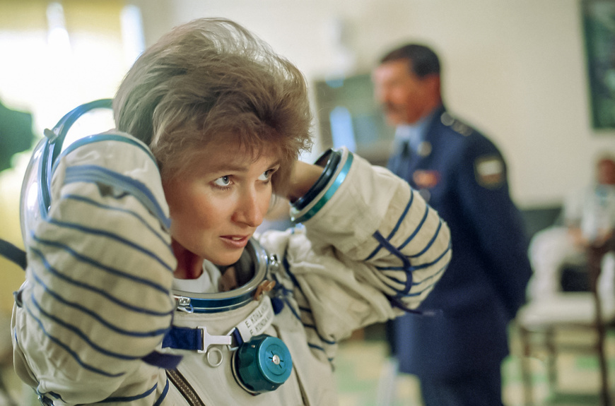

История космонавтики





В настоящее время человечество продолжает исследование космоса, в том числе – силами космонавтов. На 2023 год на Мировой космической станции находится 7 человек, среди них российские космонавты Сергей Прокопьев, Дмитрий Петелин и Андрей Федяев, американские астронавты NASA Фрэнк Рубио, Стивен Боуэн и Вуди Хобург, а также астронавт ОАЭ Султан аль-Нейади.
Несомненно, наука и технологии двигаются вперед, делая жизнь космонавтов в космосе
безопаснее и удобнее, развивается космический туризм, растет количество людей,
потенциально готовых отправиться в космос. Однако по-прежнему значительную роль играют
личные и профессиональные качества тех, кто отправляется в космос. Российским
космонавтам принадлежат некоторые рекорды уже и в современной истории.
Космический медик Валерий Поляков (27 апреля 1942 — 7 сентября 2022) являлся
обладателем мирового рекорда по длительности непрерывного полета – 437 суток. Он
находился на орбитальной станции «Мир» с января 1994 года по март 1995 года. Рекорд по
состоянию на 2023 год по-прежнему остается непобитым. Всего он совершил две
космические экспедиции и пробыл на орбите 678 суток 16 часов.

Долгое время рекордсменом по общей длительности пребывания на орбите оставался известный советский и российский космонавт Сергей Крикалев. На его счету 6 полетов (за период с 1988 по 2005 гг.) и суммарное время пребывания на орбите – 803 суток 9 часов и 38 минут.

Рекорд Крикалева побил ещё один опытнейший российский космонавт Геннадий Падалка, совершивший 5 полетов и после возвращения из последнего 29 июня 2015 года ставший мировым рекордсменом по суммарному пребыванию в космическом пространстве — 878 суток 11 часов и 29 минут.
Второе место в этом списке занимает также российский космонавт Юрий Маленченко, который совершил 6 полётов в космос и провёл на орбите в общей сложности 827 суток 9 часов и 20 минут. Также за время работы на станции он совершил 5 выходов в открытый космос, один из которых продлился более 6 часов.
Рекорд по количеству выходов в открытый космос также принадлежит нашему соотечественнику Анатолию Соловьеву. К 1998 году он совершил 16 выходов (общее время проведенное им вне борта корабля достигает 78 часов 48 минут).

Несмотря на то, что СССР первым в мире направит в космос женщину, женщин-космонавтов в
его истории будет немного, всего две – Терешкова и Савицкая. В новейшей истории
российские женщины побывали в космосе 4 раза (всего в отечественной истории – 6, у США
– 55 за всё время).
Первой уже в российской космонавтике станет Елена Кондакова, летавшая в космос
дважды. Первый полет – 4 октября 1994 – 22 марта 1995 г. Пробыла на орбите 169 суток,
5 часов и 21 минуту. Таким образом, Кондакова стала первой женщиной совершившей
длительный полет в космос. Вторая экспедиция состоялся на американском шаттле
«Атлантис» и занял 9 суток 5 часов и 19 минут (15 – 24 мая 1997 г.).
В 2022 – 2023 гг. на орбите снова побывала наша соотечественница Анна Кикина, шестая по счёту, пробыла там 157 суток 10 часов 01 минуту (с 5 октября 2022 – по 12 марта 2023 г.). 5 октября 2022 года она отправилась на МКС в составе экипажа миссии SpaceX Crew-5 со своими коллегами из США (таким образом, стала первым российским космонавтом, осуществившем полет на этом корабле).